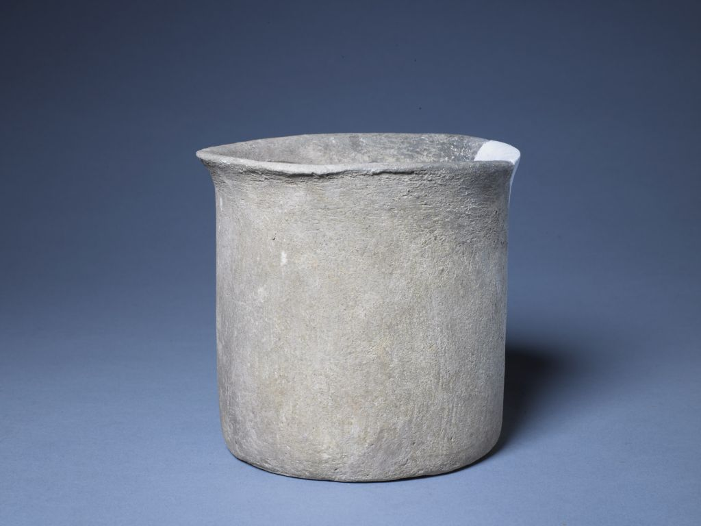
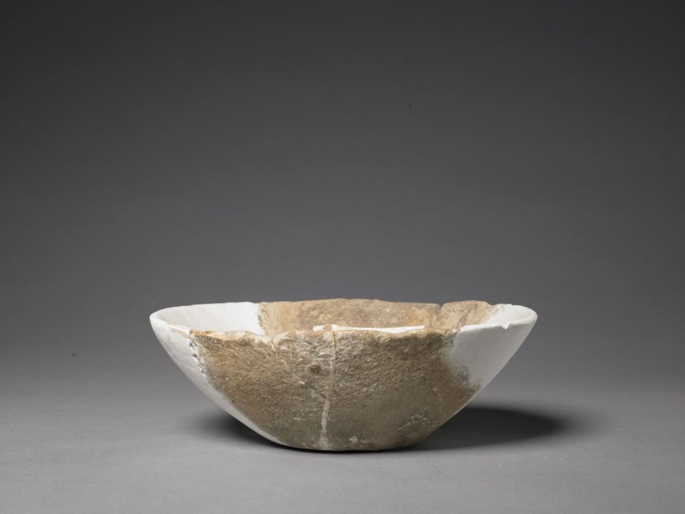
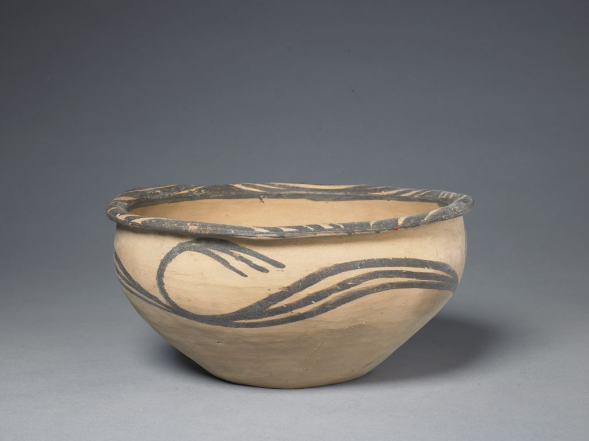

陶瓷
故宫博物院是中国最大的古代艺术品宝库，在近百万件藏品中，陶瓷器占约三十五万件。另外，还收藏有数千件实物资料和自1949年以来故宫博物院研究人员从全国各地150多个重要窑口采集的3万多片瓷片标本。
故宫博物院是中国最大的古代艺术品宝库，在近百万件藏品中，陶瓷器占约三十五万件。另外，还收藏有数千件实物资料和自1949年以来故宫博物院研究人员从全国各地150多个重要窑口采集的3万多片瓷片标本。

宫廷使用和收藏陶瓷器至迟可上溯至唐朝。唐、五代时，朝廷曾旨令一些制瓷质地优良的窑场烧造贡瓷，《国史补》、《元和郡县图志》和《新唐书·地理志》中有河南白瓷和浙江越窑青瓷向长安进贡的记载。宋代，朝廷先是令一些制瓷质量较好的窑场如定窑、耀州窑等烧造贡瓷，而后设立汝窑、钧窑、修内司官窑、郊坛下官窑等官办瓷窑，专门烧造宫廷用瓷。至明代初期，皇室已收藏了数量可观的宋代名窑瓷器。明、清两代朝廷均在景德镇设御窑厂，并选派督陶官驻厂或命地方官监造，不惜工本，大量烧造宫廷用瓷。从《明史》、《明实录》、《大明会典》、《江西省大志·陶书》、《瓷务事宜示谕稿·序》、《陶成纪事》等有关记载看，其烧造数量十分惊人。如明宣德八年，应专掌御膳的机构尚膳监之要求，一次烧造各样瓷器四十四万三千五百件。清雍正六年至十三年“计费帑金数万，而制进圆琢等器不下三四十万件”。至清末皇宫内保存的陶瓷器达数十万件之巨。

目前这些瓷器分别收藏在北京故宫博物院、台北故宫博物院及南京博物院，国内外其他一些博物馆及私人也有零星收藏，其中仅北京故宫博物院即收藏约三十二万件。许多闻名于世的精品，如唐代邢窑白釉葵口碗，宋代汝窑三足樽、哥窑鱼耳炉、官窑弦纹瓶、钧窑月白釉出戟尊、龙泉窑青釉凤耳瓶、定窑孩儿枕，元代蓝釉白龙纹盘，明代永乐青花压手杯、宣德青花梵文出戟盖罐、成化斗彩鸡缸杯、弘治黄釉描金兽耳罐、万历五彩镂空云凤纹瓶，清代康熙紫红地珐琅彩缠枝莲纹瓶、雍正珐琅彩雉鸡牡丹纹碗、乾隆各种釉彩大瓶等，均属于原清宫旧藏品。新中国成立后，通过国家有关部门拨交、个人捐献、出土流散文物征集等方式，使故宫博物院的陶瓷收藏日益丰厚，并弥补了原清宫收藏品在某些年代方面的欠缺。

如今，故宫博物院所藏中国古代陶瓷可谓自成体系，较为全面地反映了中国陶瓷生产八千年延绵不断的历史。特别是所藏宋代五大名窑及明、清官窑瓷器，无论数量还是质量，在世界上均堪称首屈一指。